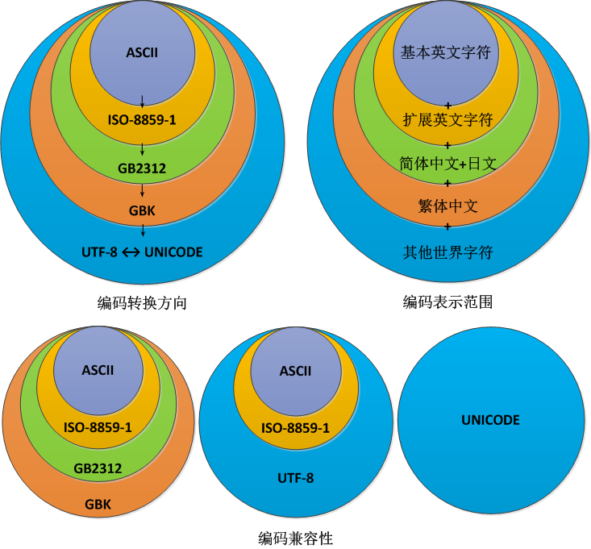

最近工作的时候，频繁遇到乱码的问题。究其原因，一般都是因为对字符集编码不熟悉，使用了错误的方法进行编码转换，从而导致乱码。
为此我特意通过实践，以Java语言为基准整理了一些编码和转码的基本知识，希望能够有深入浅出之效，帮助大家在工作中更好地处理编码问题。
■ 字符集与编码
字符集就是多个符号的集合，如英文字符集、中文字符集、数字集、拉丁符号集等。在一个字符集中，用于唯一标识某个字符的号码，即为编码。在计算机中，编码是由01二进制串组成的，而不同的字符集，编码长度为单字节到多字节不等。
通常会用字典去记录字符集中各个字符与编码的对应关系，亦即是编码表。
■ 字符集类型
常用的字符集有 ISO-8859-1、 GBK、 UTF-8、 Unicode 等。
ISO-8859-1 是在 ASCII 的扩展编码，是单字节定长编码，仅能表示英文字符。 GBK 是中国的国标码，是不定长编码，除了兼容 ISO-8859-1 编码，还支持简繁中文、平假片假日文字符的表示。 UTF-8 和 Unicode 编码都是不定长编码，虽然两者都能够表示世界上所有符号，但 UTF-8 至少兼容了 ISO-8859-1 编码， Unicode 却不兼容其他所有编码。
■ 范围与兼容
不同的字符集有其表示范围，如 ISO-8859-1 只可以表示英文字符、 GBK 只可以表示英文、中文和日文字符。
至于兼容，如字符集A兼容字符集B，除了指字符集A的表示范围囊括了字符集B，还指字符集B中的所有字符的编码值与字符集A中对应的字符一致。
如 GBK、 UTF-8 均兼容 ISO-8859-1 ，以英文字符 a 为例，其在 ISO-8859-1 、 GBK 和 UTF-8 中都是单字节的编码值 0x61；而 Unicode 不兼容 ISO-8859-1 ，事实上英文字符a在 Unicode 中是一个双字节的编码值 0x00 0x61。

■ 编码的转换
编码兼容与编码转换没有必然联系，表示范围才是编码转换的根本。
两个字符集之间可以进行编码转换，而不出现乱码，其前提是它们的表示范围相同。如 UTF-8 和 Unicode ，它们的全部字符都可以实现可逆互转。
对于表示范围不同的两个字符集，只可以从小范围字符集转换到大范围字符集，而不能逆向转换，除非对大范围字符集进行范围限制。如 GBK 和 UTF-8 ，从 GBK 转换到 UTF-8 一定不会出现乱码；但从 UTF-8 转换到 GBK 则需要把转换范围限制在英文、中文和日文字符，若转换其他字符（如韩文）则必定乱码。
■ Java的编转码
Java 的 String 对象提供了2个方法以供编码转换（顺带一提，Java 为便于内部交流，所有字符串在内存被处理时都会被转换为 Unicode ，但不影响实际的编码转换操作，认为 Unicode 是中间层即可，可以不关注）：
◇ 解码：
new String(byte[] bytes, String rCharset)
把字节数组 bytes 保存为字符串，当需要重新提取 bytes 时（每次使用这个字符串时都会提取），以 rCharset 的编码方式读取（即解码）。
很多人误会了这个方法是把 bytes 转换为以 rCharset 编码的字符串，其实不然。这个方法不会改变 bytes 的值，它只是告诉编码系统，以后应该以 rCharset 方式去提取 bytes 。所以 bytes 的编码方式就应该是 rCharset 。
◇ 编转码：
byte[] str.getBytes(String wCharset)
获取字符串 str 以 wCharset 编码的字节数组。
这个方法实际上是先用 rCharset 编码方式提取字符串 str 中的字节数组 bytes，再根据编码表把 bytes 转换为以 wCharset 编码的字节数组。
使用这个方法时，要保证 wCharset 编码的表示范围大于等于 rCharse，或保证字符串 str 的内容取值范围在 wCharset 的表示范围中，否则必然导致乱码。
前面已经说过，字符集的转码与其表示范围息息相关，即 字符集A 中的 字符k 要转码到 字符集B，必须约定 字符k 是在 字符集B 的表示范围内。而一旦这种约定被破坏，字符集B 会因为在自己的编码表找不到 字符k 的编码，于是就使用一个占位符去替代之。在Java中这个占位符为 0x3F，即英文字符 ?。
举个例子，对于使用 GBK 编码的字符串 見见たa1，若转码为GB2312，则会得到字符串 ?见たa1，因为 GB2312 不能表示繁体中文字符；若转码为 ISO-8859-1 ，则会得到 ???a1 ，因为 ISO-8859-1 只能表示英文字符。
■ 负负不得正
不难理解，把源字符串使用 A方式 进行编码，若误用了 B方式 去解码，必然会得到乱码字符串。但很多人都以为，对乱码字符串用 B方式 进行编码，再重新用 A方式 去解码，就可以得到源字符串。
其实不然，因为编解码不同于转码，大部分编解码的过程都是不可逆的。
在误用 B方式 去解码的时候，B方式 会在自己的编码表（而不是 A方式 的编码表）查找源编码对应的字符，找不到的编码则用占位符去替代，最后得到的必然不同于源字符串（除非 B 兼容 A），而是新的字符串，即乱码。
若这时再用 B方式 对新字符串编码，然后用 A方式 解码，不过就是互换了刚才 A、B 的位置而已，这不是负负得正，而是恶性循环。
■ 诡异的 ISO-8859-1
ISO-8859-1 是纯粹用于表示英文字符的编码，因此在众多的编码中，其表示范围可谓渺小到一人之上、万人之下了。尽管如此， ISO-8859-1 却有一个其他编码都不具备的特性：单字节解码特性。
举例说明，把中文字符 我 以 GBK 编码存储在字节数组 gbkBytes 中，则所存储的为两个字节 0xCE 0xD2 。按前文所述的方法，要重新获取 gbkBytes 编码所指向的字符，应该使用 String gbkStr = new String(gbkBytes, "GBK")的方法，即告诉编码系统要在 GBK 的编码表查找 gbk Bytes对应的字符。
但若 new String 的时候，声明了其他编码方式作为解码方法，如 UTF-8，则会如前文所述一样，得到一段恶性循环的乱码。但只有 ISO-8859-1 是个例外。
虽然这样做 String isoStr = new String(gbkBytes, "ISO-8859-1")，一样会因为 ISO-8859-1 在查自己的编码表时，得到与源字符串相异的乱码，但是 ISO-8859-1 只会把 gbkBytes 逐个字节拆解，当作英文字符处理，并不会出现占位符替换等修改 gbkBytes 内容的情况。
换而言之，由 ISO-8859-1 方式解码产生的乱码是可逆的。事实上，对于isoStr，完全可以用 isoStr.getBytes("ISO-8859-1") 方法还原 gbkBytes 编码。
■ 协议欺骗
在有些应用环境下，为了规避编码问题（或其他原因），协议往往会限制只能使用英文字符作为传输，如 web 的 url 只允许附带英文参数。但有时候确实需要在这种环境下传输中文，此时就可以利用 ISO-8859-1 的单字节解码特性进行协议欺骗：即传输消息的双方通过逆向处理，都可以把消息的编码进行还原得到中文，但在传输过程中，却可以“遵守”协议的约束，仅传输英文消息。